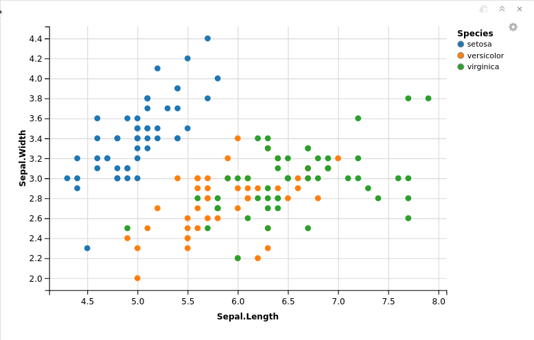
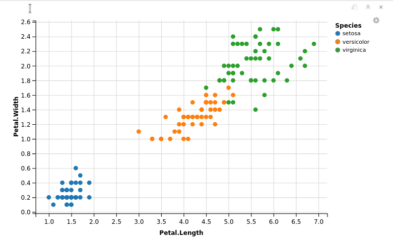
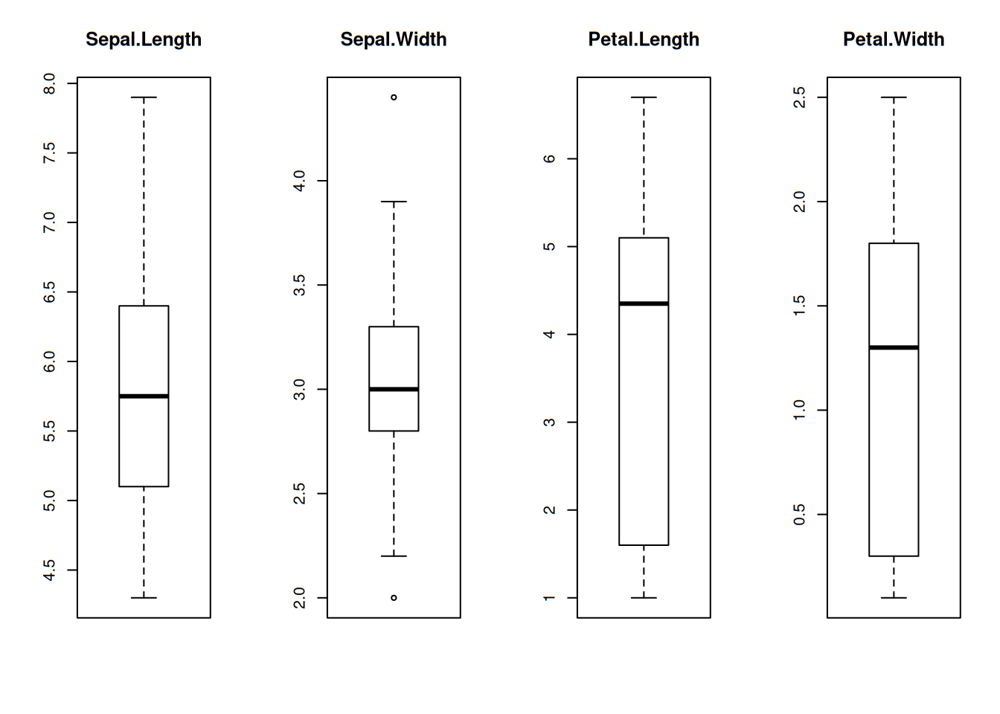
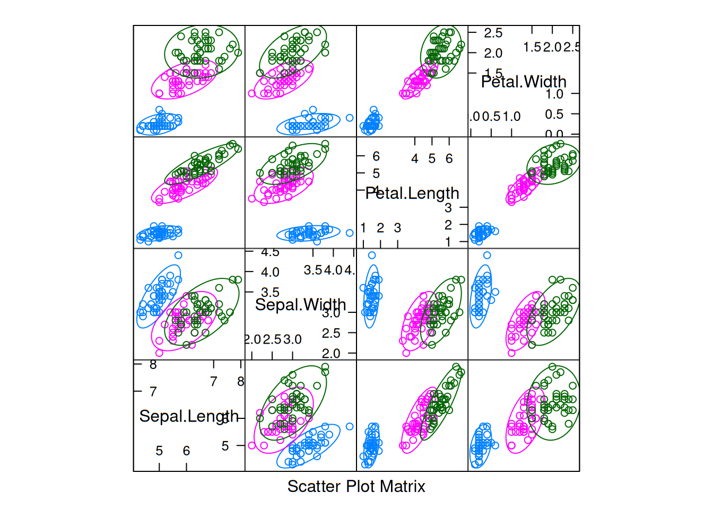
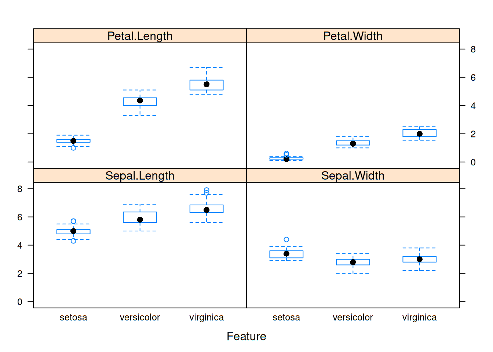
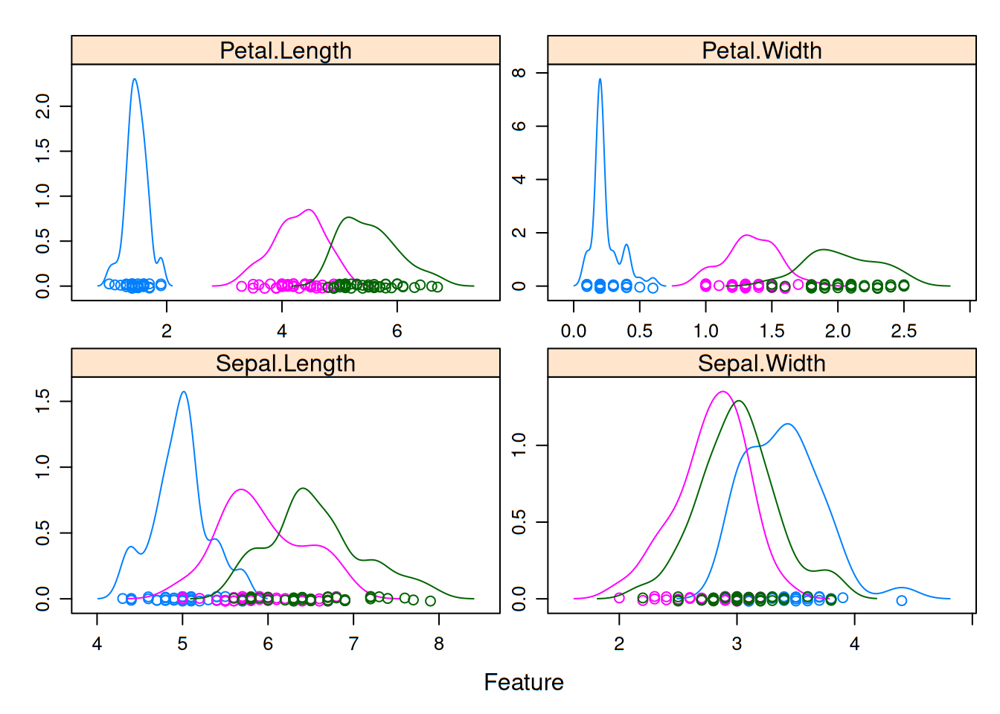
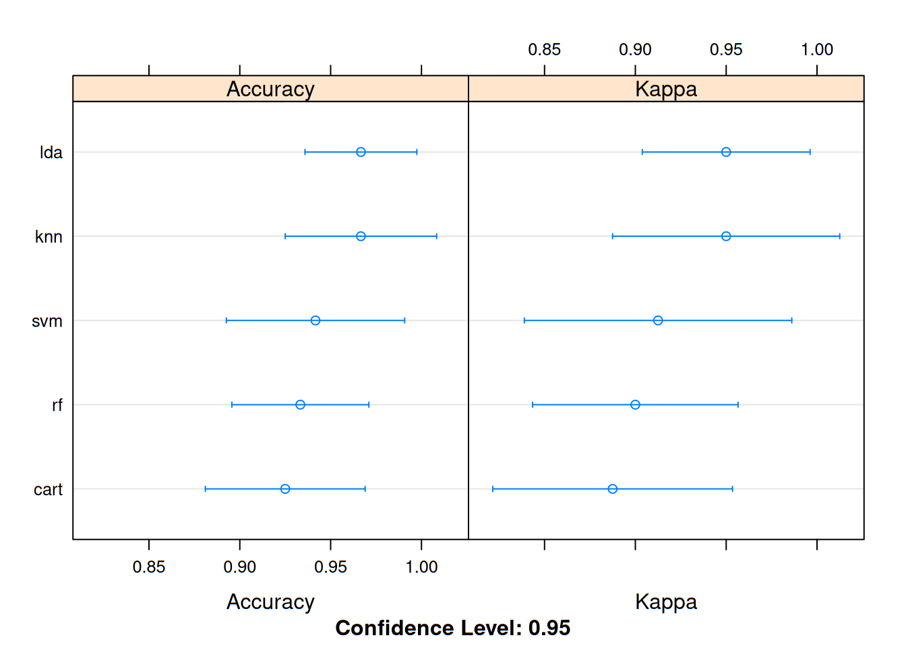

El Machine Learning (o ML) o Aprendizaje Automático es una rama de las Ciencias de la Computación que estudia el diseño de algoritmos que puedan aprender. Las tareas típicas del Aprendizaje Automático (en delante AA) son el aprendizaje de conceptos, el modelado predictivo, agrupamiento y patrones de búsqueda. Esas tareas se aprenden por medio de conjuntos de datos disponibles a través de la experiencia o por órdenes. Se espera que al incluir la experiencia en sus propias tareas, se mejore el aprendizaje. La meta final es mejorar el aprendizaje de manera que se vuelva automático, para así evitar la interferencia humana.
En este taller conoceremos las bases del AA por medio del software R y su IDE RStudio. Para ello, comenzaremos con un algoritmo muy conocido: KNN, o k-nearest neighbors
El AA inicia con datos. Pueden obtenerse a partir de varias fuentes o incluso ser información propia. Arrancaremos con algunos presentes por defecto en R.
Comenzaremos con un conjunto de datos presente en el propio software: Iris. Iris es bastante conocido en AA, debido a su tamaño y facilidad de uso. Para cargar el conjunto de datos basta con escribir lo siguiente en la consola:
iris## Sepal.Length Sepal.Width Petal.Length Petal.Width Species
## 1 5.1 3.5 1.4 0.2 setosa
## 2 4.9 3.0 1.4 0.2 setosa
## 3 4.7 3.2 1.3 0.2 setosa
## 4 4.6 3.1 1.5 0.2 setosa
## 5 5.0 3.6 1.4 0.2 setosa
## 6 5.4 3.9 1.7 0.4 setosa
## 7 4.6 3.4 1.4 0.3 setosa
## 8 5.0 3.4 1.5 0.2 setosa
## 9 4.4 2.9 1.4 0.2 setosa
## 10 4.9 3.1 1.5 0.1 setosa
## 11 5.4 3.7 1.5 0.2 setosa
## 12 4.8 3.4 1.6 0.2 setosa
## 13 4.8 3.0 1.4 0.1 setosa
## 14 4.3 3.0 1.1 0.1 setosa
## 15 5.8 4.0 1.2 0.2 setosa
## 16 5.7 4.4 1.5 0.4 setosa
## 17 5.4 3.9 1.3 0.4 setosa
## 18 5.1 3.5 1.4 0.3 setosa
## 19 5.7 3.8 1.7 0.3 setosa
## 20 5.1 3.8 1.5 0.3 setosa
## 21 5.4 3.4 1.7 0.2 setosa
## 22 5.1 3.7 1.5 0.4 setosa
## 23 4.6 3.6 1.0 0.2 setosa
## 24 5.1 3.3 1.7 0.5 setosa
## 25 4.8 3.4 1.9 0.2 setosa
## 26 5.0 3.0 1.6 0.2 setosa
## 27 5.0 3.4 1.6 0.4 setosa
## 28 5.2 3.5 1.5 0.2 setosa
## 29 5.2 3.4 1.4 0.2 setosa
## 30 4.7 3.2 1.6 0.2 setosa
## 31 4.8 3.1 1.6 0.2 setosa
## 32 5.4 3.4 1.5 0.4 setosa
## 33 5.2 4.1 1.5 0.1 setosa
## 34 5.5 4.2 1.4 0.2 setosa
## 35 4.9 3.1 1.5 0.2 setosa
## 36 5.0 3.2 1.2 0.2 setosa
## 37 5.5 3.5 1.3 0.2 setosa
## 38 4.9 3.6 1.4 0.1 setosa
## 39 4.4 3.0 1.3 0.2 setosa
## 40 5.1 3.4 1.5 0.2 setosa
## 41 5.0 3.5 1.3 0.3 setosa
## 42 4.5 2.3 1.3 0.3 setosa
## 43 4.4 3.2 1.3 0.2 setosa
## 44 5.0 3.5 1.6 0.6 setosa
## 45 5.1 3.8 1.9 0.4 setosa
## 46 4.8 3.0 1.4 0.3 setosa
## 47 5.1 3.8 1.6 0.2 setosa
## 48 4.6 3.2 1.4 0.2 setosa
## 49 5.3 3.7 1.5 0.2 setosa
## 50 5.0 3.3 1.4 0.2 setosa
## 51 7.0 3.2 4.7 1.4 versicolor
## 52 6.4 3.2 4.5 1.5 versicolor
## 53 6.9 3.1 4.9 1.5 versicolor
## 54 5.5 2.3 4.0 1.3 versicolor
## 55 6.5 2.8 4.6 1.5 versicolor
## 56 5.7 2.8 4.5 1.3 versicolor
## 57 6.3 3.3 4.7 1.6 versicolor
## 58 4.9 2.4 3.3 1.0 versicolor
## 59 6.6 2.9 4.6 1.3 versicolor
## 60 5.2 2.7 3.9 1.4 versicolor
## 61 5.0 2.0 3.5 1.0 versicolor
## 62 5.9 3.0 4.2 1.5 versicolor
## 63 6.0 2.2 4.0 1.0 versicolor
## 64 6.1 2.9 4.7 1.4 versicolor
## 65 5.6 2.9 3.6 1.3 versicolor
## 66 6.7 3.1 4.4 1.4 versicolor
## 67 5.6 3.0 4.5 1.5 versicolor
## 68 5.8 2.7 4.1 1.0 versicolor
## 69 6.2 2.2 4.5 1.5 versicolor
## 70 5.6 2.5 3.9 1.1 versicolor
## 71 5.9 3.2 4.8 1.8 versicolor
## 72 6.1 2.8 4.0 1.3 versicolor
## 73 6.3 2.5 4.9 1.5 versicolor
## 74 6.1 2.8 4.7 1.2 versicolor
## 75 6.4 2.9 4.3 1.3 versicolor
## 76 6.6 3.0 4.4 1.4 versicolor
## 77 6.8 2.8 4.8 1.4 versicolor
## 78 6.7 3.0 5.0 1.7 versicolor
## 79 6.0 2.9 4.5 1.5 versicolor
## 80 5.7 2.6 3.5 1.0 versicolor
## 81 5.5 2.4 3.8 1.1 versicolor
## 82 5.5 2.4 3.7 1.0 versicolor
## 83 5.8 2.7 3.9 1.2 versicolor
## 84 6.0 2.7 5.1 1.6 versicolor
## 85 5.4 3.0 4.5 1.5 versicolor
## 86 6.0 3.4 4.5 1.6 versicolor
## 87 6.7 3.1 4.7 1.5 versicolor
## 88 6.3 2.3 4.4 1.3 versicolor
## 89 5.6 3.0 4.1 1.3 versicolor
## 90 5.5 2.5 4.0 1.3 versicolor
## 91 5.5 2.6 4.4 1.2 versicolor
## 92 6.1 3.0 4.6 1.4 versicolor
## 93 5.8 2.6 4.0 1.2 versicolor
## 94 5.0 2.3 3.3 1.0 versicolor
## 95 5.6 2.7 4.2 1.3 versicolor
## 96 5.7 3.0 4.2 1.2 versicolor
## 97 5.7 2.9 4.2 1.3 versicolor
## 98 6.2 2.9 4.3 1.3 versicolor
## 99 5.1 2.5 3.0 1.1 versicolor
## 100 5.7 2.8 4.1 1.3 versicolor
## 101 6.3 3.3 6.0 2.5 virginica
## 102 5.8 2.7 5.1 1.9 virginica
## 103 7.1 3.0 5.9 2.1 virginica
## 104 6.3 2.9 5.6 1.8 virginica
## 105 6.5 3.0 5.8 2.2 virginica
## 106 7.6 3.0 6.6 2.1 virginica
## 107 4.9 2.5 4.5 1.7 virginica
## 108 7.3 2.9 6.3 1.8 virginica
## 109 6.7 2.5 5.8 1.8 virginica
## 110 7.2 3.6 6.1 2.5 virginica
## 111 6.5 3.2 5.1 2.0 virginica
## 112 6.4 2.7 5.3 1.9 virginica
## 113 6.8 3.0 5.5 2.1 virginica
## 114 5.7 2.5 5.0 2.0 virginica
## 115 5.8 2.8 5.1 2.4 virginica
## 116 6.4 3.2 5.3 2.3 virginica
## 117 6.5 3.0 5.5 1.8 virginica
## 118 7.7 3.8 6.7 2.2 virginica
## 119 7.7 2.6 6.9 2.3 virginica
## 120 6.0 2.2 5.0 1.5 virginica
## 121 6.9 3.2 5.7 2.3 virginica
## 122 5.6 2.8 4.9 2.0 virginica
## 123 7.7 2.8 6.7 2.0 virginica
## 124 6.3 2.7 4.9 1.8 virginica
## 125 6.7 3.3 5.7 2.1 virginica
## 126 7.2 3.2 6.0 1.8 virginica
## 127 6.2 2.8 4.8 1.8 virginica
## 128 6.1 3.0 4.9 1.8 virginica
## 129 6.4 2.8 5.6 2.1 virginica
## 130 7.2 3.0 5.8 1.6 virginica
## 131 7.4 2.8 6.1 1.9 virginica
## 132 7.9 3.8 6.4 2.0 virginica
## 133 6.4 2.8 5.6 2.2 virginica
## 134 6.3 2.8 5.1 1.5 virginica
## 135 6.1 2.6 5.6 1.4 virginica
## 136 7.7 3.0 6.1 2.3 virginica
## 137 6.3 3.4 5.6 2.4 virginica
## 138 6.4 3.1 5.5 1.8 virginica
## 139 6.0 3.0 4.8 1.8 virginica
## 140 6.9 3.1 5.4 2.1 virginica
## 141 6.7 3.1 5.6 2.4 virginica
## 142 6.9 3.1 5.1 2.3 virginica
## 143 5.8 2.7 5.1 1.9 virginica
## 144 6.8 3.2 5.9 2.3 virginica
## 145 6.7 3.3 5.7 2.5 virginica
## 146 6.7 3.0 5.2 2.3 virginica
## 147 6.3 2.5 5.0 1.9 virginica
## 148 6.5 3.0 5.2 2.0 virginica
## 149 6.2 3.4 5.4 2.3 virginica
## 150 5.9 3.0 5.1 1.8 virginicaR nos mostrará un conjunto de datos un poco grande, de 150 observaciones y con nombres de columna bien definidos (en inglés).
Una vez cargados los datos, vamos a darles un vistazo para tratar de entender de qué van. Y aquí es precisamente donde lo “heredado” del Data Science cobra sentido: solo ver o leer no es suficiente para comenzar. Necesitamos explorar y visualizar el conjunto de datos, incluso profundizar en el conocimiento del mismo. Nuestro dataset consiste de observaciones de una especie de plantas llamadas iris, cuyas flores son bastante llamativas y muy variadas. Solo como recordatorio, las flores contienen sépalos y pétalos. Los primeros son verdes y con forma de hoja, rodeando a las flores más pequeñas. Y los pétalos son de colores llamativos.
Es un tanto difícil distinguir las especies de iris que contiene nuestro dataset. Pero por nuestro bien, es mejor conocer las diferencias. No podemos enseñar algo que ni nosotros mismos conocemos bien.
Hagamos algunos gráficos para tratar de tener una mejor idea de con qué estamos tratando. Comencemos con unos diagramas de dispersión, con el objetivo de conocer qué tanto afecta una variable a otra. Es decir, veremos si existe una correlación entre dos variables. Iniciemos con la instalación de paquetes que expanden la funcionalidad de R. El primero será precisamente el que utilizaremos para generar un diagrama de dispersión atractivo: ggvis. Lo instalamos mediante el menú Tools -> Install packages.
Una vez instalado, debemos cargarlo en memoria. Tenemos dos opciones:
Ir al panel inferior derecho, en la pestaña Packages. En la parte superior de dicho panel se encuentra una caja de búsqueda. Escribimos allí ggvis y nos lo muestra junto con una leve descripción. Damos check al lado del nombre del paquete y listo.
En la consola escribimos library(ggvis).
Independientemente del método empleado, en la consola no debería aparecer algún mensaje de error. Ahora bien, escribimos el siguiente comando:
library(ggvis)
iris %>% ggvis(~Sepal.Length, ~Sepal.Width, fill = ~Species) %>% layer_points()
Aquí podemos observar que existe una fuerte correlación entre la longitud y la anchura del sépalo en la especie Setosa, no así con las Versicolor o Virginica. Tracemos ahora otro diagrama de dispersión pero con los datos que corresponden a los pétalos:
iris %>% ggvis(~Petal.Length, ~Petal.Width, fill = ~Species) %>% layer_points()
Estos diagramas indican que existe una correlación positiva entre la longitud y la anchura de los pétalos, para todas las especies de iris que están disponibles en nuestra muestra. Pero eso es solo el resultado de una observación, probemos esta hipótesis para asegurarnos de que dicha correlación existe en realidad.
Calculemos la correlación entre las variables estudiadas. Primero la existente entre la anchura y longitud de los sépalos:
cor(iris$Petal.Length, iris$Petal.Width)## [1] 0.9628654Muy importante notar que el coeficiente de correlación entre dichas variables es muy alto, del orden del 96.28%. Solo para recordar, la correlación ideal es igual a 1.
Ahora vamos a extraer de manera ordenada los datos para analizarlos mejor. Busquemos los niveles (es decir, las etiquetas de las especies) que se encuentran en nuestro dataset iris en su columna Species y los asignamos a \(x\). Enseguida invocamos a dicha variable y mostramos su valor:
x=levels(iris$Species)
x## [1] "setosa" "versicolor" "virginica"Vamos a limitar los datos ahora a una sola especie y luego calcular su matriz de correlación. Primero por la Setosa:
print(x[1])## [1] "setosa"cor(iris[iris$Species==x[1],1:4])## Sepal.Length Sepal.Width Petal.Length Petal.Width
## Sepal.Length 1.0000000 0.7425467 0.2671758 0.2780984
## Sepal.Width 0.7425467 1.0000000 0.1777000 0.2327520
## Petal.Length 0.2671758 0.1777000 1.0000000 0.3316300
## Petal.Width 0.2780984 0.2327520 0.3316300 1.0000000La versicolor:
print(x[2])## [1] "versicolor"cor(iris[iris$Species==x[2],1:4])## Sepal.Length Sepal.Width Petal.Length Petal.Width
## Sepal.Length 1.0000000 0.5259107 0.7540490 0.5464611
## Sepal.Width 0.5259107 1.0000000 0.5605221 0.6639987
## Petal.Length 0.7540490 0.5605221 1.0000000 0.7866681
## Petal.Width 0.5464611 0.6639987 0.7866681 1.0000000Y la Virginica:
print(x[3])## [1] "virginica"cor(iris[iris$Species==x[3],1:4])## Sepal.Length Sepal.Width Petal.Length Petal.Width
## Sepal.Length 1.0000000 0.4572278 0.8642247 0.2811077
## Sepal.Width 0.4572278 1.0000000 0.4010446 0.5377280
## Petal.Length 0.8642247 0.4010446 1.0000000 0.3221082
## Petal.Width 0.2811077 0.5377280 0.3221082 1.0000000Los coeficientes de correlación son menores por separado que todos juntos. Por ejemplo, para la Setosa tenemos un coeficiente de 0.3316.
Si quisiéramos ver el listado de los datos, nos daremos cuenta de que no nos dice gran cosa. Si es solo con la intención de echar un vistazo a los datos en cuanto a su estructura, resulta mejor hacerlo con el comando
head(iris,5)## Sepal.Length Sepal.Width Petal.Length Petal.Width Species
## 1 5.1 3.5 1.4 0.2 setosa
## 2 4.9 3.0 1.4 0.2 setosa
## 3 4.7 3.2 1.3 0.2 setosa
## 4 4.6 3.1 1.5 0.2 setosa
## 5 5.0 3.6 1.4 0.2 setosaEste comando nos da una vista previa del dataset que ponemos como primer argumento. El segundo es el número de filas que queremos observar. Aún así, para una observación más profunda, es mejor utilizar el comando
str(iris)## 'data.frame': 150 obs. of 5 variables:
## $ Sepal.Length: num 5.1 4.9 4.7 4.6 5 5.4 4.6 5 4.4 4.9 ...
## $ Sepal.Width : num 3.5 3 3.2 3.1 3.6 3.9 3.4 3.4 2.9 3.1 ...
## $ Petal.Length: num 1.4 1.4 1.3 1.5 1.4 1.7 1.4 1.5 1.4 1.5 ...
## $ Petal.Width : num 0.2 0.2 0.2 0.2 0.2 0.4 0.3 0.2 0.2 0.1 ...
## $ Species : Factor w/ 3 levels "setosa","versicolor",..: 1 1 1 1 1 1 1 1 1 1 ...La razón del porqué es mejor se muestra de inmediato. No solo nos devuelve algunas observaciones del dataset, sino que además nos indica cuántas observaciones y variables tenemos, el nombre de las variables y en especial, el tipo de dato. Podemos notar que los primeros cuatro son numéricos mientras que el último es un factor. Incluso nos indica los niveles de dicho factor. Esto es bastante conveniente, ya que muchos clasificadores Machine Learning requieren que la propiedad objetivo esté codificado como factor. Recordemos pues que las variables tipo factor representan variables categóricas en R. Si quisiéramos obtener una tabla de frecuencias absolutas de las especies, lo podemos hacer con:
table(iris$Species)##
## setosa versicolor virginica
## 50 50 50Notemos que esto cuenta la cantidad de repeticiones de cada factor. Si lo que queremos es una tabla de frecuencias relativas, podemos obtenerla con:
prop.table(table(iris$Species))##
## setosa versicolor virginica
## 0.3333333 0.3333333 0.3333333Y si queremos que se exprese en porcentajes con redondeo a dos dígitos, simplemente agregamos el comando round con la tabla anterior, una multiplicación por 100 y el argumento de los dígitos o números decimales:
round(prop.table(table(iris$Species)) * 100, digits = 2)##
## setosa versicolor virginica
## 33.33 33.33 33.33R nos permite cavar más profundamente en nuestro dataset. El comando summary nos devuelve el valor más pequeño, los cuartiles y el valor máximo para variables numéricas; el conteo para las categóricas:
summary(iris)## Sepal.Length Sepal.Width Petal.Length Petal.Width
## Min. :4.300 Min. :2.000 Min. :1.000 Min. :0.100
## 1st Qu.:5.100 1st Qu.:2.800 1st Qu.:1.600 1st Qu.:0.300
## Median :5.800 Median :3.000 Median :4.350 Median :1.300
## Mean :5.843 Mean :3.057 Mean :3.758 Mean :1.199
## 3rd Qu.:6.400 3rd Qu.:3.300 3rd Qu.:5.100 3rd Qu.:1.800
## Max. :7.900 Max. :4.400 Max. :6.900 Max. :2.500
## Species
## setosa :50
## versicolor:50
## virginica :50
##
##
## Si en un momento dado necesitamos el resumen de columnas específicas, podemos refinar el comando de la siguiente manera:
summary(iris[c("Petal.Width", "Sepal.Width")])## Petal.Width Sepal.Width
## Min. :0.100 Min. :2.000
## 1st Qu.:0.300 1st Qu.:2.800
## Median :1.300 Median :3.000
## Mean :1.199 Mean :3.057
## 3rd Qu.:1.800 3rd Qu.:3.300
## Max. :2.500 Max. :4.400El comando c() concatena las dos columnas especificadas y muestra solo el resumen de dichas columnas.
Una vez conocidos los datos, toca decidir qué hacer con ellos, es decir, qué podrían enseñarnos o qué podríamos aprender de ellos. En este caso, podríamos formular un modelo predictivo que nos permita clasificar con base en las especies. También podríamos generar un modelo de regresión con los datos numéricos. En este caso, el atributo categórico Species es el que convertiremos en el atributo objetivo. O sea, vamos a predecir.
Muchos de los algoritmos usados en Machine Learning no se encuentran instalados por defecto en R. Así que debemos instalarlos. En nuestro caso, para mostrar el algoritmo KNN trabajaremos con el paquete class.
Enfoquémonos en la tarea principal: un modelo de Machine Learning. Para ello, debemos preparar los datos: normalizarlos y distribuirlos en dos conjuntos: uno de entrenamiento y otro de validación.
Es probable que los datos deban ser normalizados para volverlos consistentes o coherentes. Un dataset consistente lo hace más sencillo para el aprendizaje del algoritmo. Existen dos tipos de normalización:
Normalización de ejemplo: es el ajuste de cada ejemplo de manera individual.
Normalización de propiedad: se ajusta cada característica de la misma manera a través de todos los ejemplos.
Si tenemos la sospecha de que los datos no son coherentes, hay que normalizar. ¿Cuándo podemos sospechar? Cuando observemos el resumen de los datos y notemos que una de las variables tiene un amplio rango de valores. Esto implica que la distancia sea dominada por esta característica.
Es difícil distinguir si un dataset requiere ser normalizado para un ojo no entrenado. En especial si apenas se comienza con el Aprendizaje Automático. Así que crearemos una función en R que nos permita normalizar nuestro conjunto de datos actual.
normaliza <- function(x) {
numerador <- x - min(x)
denominador <- max(x) - min(x)
return(numerador/denominador)
}Ahora aplicamos esta función al dataset y calculamos su resumen:
iris_normalizado <- as.data.frame(lapply(iris[1:4], normaliza))
summary(iris_normalizado)## Sepal.Length Sepal.Width Petal.Length Petal.Width
## Min. :0.0000 Min. :0.0000 Min. :0.0000 Min. :0.00000
## 1st Qu.:0.2222 1st Qu.:0.3333 1st Qu.:0.1017 1st Qu.:0.08333
## Median :0.4167 Median :0.4167 Median :0.5678 Median :0.50000
## Mean :0.4287 Mean :0.4406 Mean :0.4675 Mean :0.45806
## 3rd Qu.:0.5833 3rd Qu.:0.5417 3rd Qu.:0.6949 3rd Qu.:0.70833
## Max. :1.0000 Max. :1.0000 Max. :1.0000 Max. :1.00000Aún así podemos observar que nuestros datos en realidad no necesitaban ser normalizados.
Dividamos el conjunto de datos en dos partes: una para entrenamiento y otra para la validación. El primero nos servirá para entrenar al sistema, mientras que el segundo servirá para evaluar el sistema entrenado. La divisón no es simétrica, usualmente se utiliza una proporción de \(\approx 66.66%\) para el set de entrenamiento y lo restante para la validación.
La separación del conjunto de datos debe ser totalmente aleatoria, por lo cual debemos crear una semilla random (generadora de números aleatorios que permite la replicabilidad de cada experimento). Esto nos permitirá escoger cada fila totalmente al azar:
set.seed(1234)Ahora utilizaremos la función sample(), la cual crea un muestreo aleatorio de nuestros datos. La asignaremos a una variable, la cual estará tomando un número, dos o uno
identificador <- sample(2, nrow(iris), replace=TRUE, prob=c(0.67, 0.33))Con esta expresión le asignamos un valor de uno o dos, a todas las filas que componen el conjunto de datos (en este caso, son 150), aplicamos verdadero al reemplazamiento para que al momento de asignar un uno o un dos lo reinicie. Por último, en el argumento de prob hacemos la partición.
Creamos el set de entrenamiento:
iris.training <- iris[identificador==1, 1:4]Veamos sus datos:
head(iris.training)## Sepal.Length Sepal.Width Petal.Length Petal.Width
## 1 5.1 3.5 1.4 0.2
## 2 4.9 3.0 1.4 0.2
## 3 4.7 3.2 1.3 0.2
## 4 4.6 3.1 1.5 0.2
## 6 5.4 3.9 1.7 0.4
## 7 4.6 3.4 1.4 0.3Ahora con el set de validación:
iris.test <- iris[identificador==2, 1:4]Y sus datos:
head(iris.test)## Sepal.Length Sepal.Width Petal.Length Petal.Width
## 5 5.0 3.6 1.4 0.2
## 11 5.4 3.7 1.5 0.2
## 14 4.3 3.0 1.1 0.1
## 16 5.7 4.4 1.5 0.4
## 26 5.0 3.0 1.6 0.2
## 28 5.2 3.5 1.5 0.2Como lo que nos importa son las especies, almacenaremos las etiquetas en vectores de factores y las distribuiremos sobre los sets de entrenamiento y validación. Primero los del set de entrenamiento:
iris.trainLabels <- iris[identificador==1,5]
print(iris.trainLabels)## [1] setosa setosa setosa setosa setosa setosa
## [7] setosa setosa setosa setosa setosa setosa
## [13] setosa setosa setosa setosa setosa setosa
## [19] setosa setosa setosa setosa setosa setosa
## [25] setosa setosa setosa setosa setosa setosa
## [31] setosa setosa setosa setosa setosa setosa
## [37] setosa setosa versicolor versicolor versicolor versicolor
## [43] versicolor versicolor versicolor versicolor versicolor versicolor
## [49] versicolor versicolor versicolor versicolor versicolor versicolor
## [55] versicolor versicolor versicolor versicolor versicolor versicolor
## [61] versicolor versicolor versicolor versicolor versicolor versicolor
## [67] versicolor versicolor versicolor versicolor versicolor versicolor
## [73] versicolor versicolor versicolor versicolor virginica virginica
## [79] virginica virginica virginica virginica virginica virginica
## [85] virginica virginica virginica virginica virginica virginica
## [91] virginica virginica virginica virginica virginica virginica
## [97] virginica virginica virginica virginica virginica virginica
## [103] virginica virginica virginica virginica virginica virginica
## [109] virginica virginica
## Levels: setosa versicolor virginicaY enseguida los de validación:
iris.testLabels <- iris[identificador==2, 5]
print(iris.testLabels)## [1] setosa setosa setosa setosa setosa setosa
## [7] setosa setosa setosa setosa setosa setosa
## [13] versicolor versicolor versicolor versicolor versicolor versicolor
## [19] versicolor versicolor versicolor versicolor versicolor versicolor
## [25] virginica virginica virginica virginica virginica virginica
## [31] virginica virginica virginica virginica virginica virginica
## [37] virginica virginica virginica virginica
## Levels: setosa versicolor virginicaHasta ahora no hemos ejecutado ningún algoritmo de aprendizaje. Pero es momento de encontrar el vecino más cercano del set de entrenamiento.
Una manera sencilla es utilizar la función knn(), la cual utiliza la distancia euclidiana para encontrar los vecinos más cercanos a la nueva instancia. El parámetro k es definido por nosotros.
Las nuevas instancias son clasificadas buscando la mayoría o la ponderación. En caso de clasificaciones, el dato con el mayor puntaje gana y la instancia desconocida recibe la etiqueta de ese punto de datos. Si existe empate, la clasificación es aleatoria.
Tomemos nuestra función knn() y simplemente le agregamos unos cuantos argumentos:
library(class)
iris_pred <- knn(train = iris.training, test = iris.test, cl = iris.trainLabels, k=3)
iris_pred## [1] setosa setosa setosa setosa setosa setosa
## [7] setosa setosa setosa setosa setosa setosa
## [13] versicolor versicolor versicolor versicolor versicolor versicolor
## [19] versicolor versicolor versicolor versicolor versicolor versicolor
## [25] virginica virginica virginica virginica versicolor virginica
## [31] virginica virginica virginica virginica virginica virginica
## [37] virginica virginica virginica virginica
## Levels: setosa versicolor virginicaAlmacenamos la predicción en una variable llamada iris_pred. Allí solo colocamos las etiquetas del set de entrenamiento. Las de validación las usaremos más adelante, para evaluar nuestro modelo. El resultado de esta función es un vector de factores con las clases predichas para cada fila de los datos de prueba.
Es decir, a partir de los datos de entrenamiento y sin conocer las etiquetas del conjunto de datos de prueba, el algoritmo trata de clasificar los últimos datos con base en las características de entrenamiento.
Un paso esencial en el Machine Learning es la evaluación del rendimiento del modelo. En otras palabras, se quiere analizar el grado de exactitud de las predicciones del modelo.
Comparemos los resultados del algoritmo con las etiquetas del conjunto de prueba (recordemos que no las hemos modificado y que el algoritmo no las conoce):
irisTestLabels <- data.frame(iris.testLabels)
compara <- data.frame(iris_pred, iris.testLabels)
names(compara) <- c("Predicted Species", "Observed Species")
compara## Predicted Species Observed Species
## 1 setosa setosa
## 2 setosa setosa
## 3 setosa setosa
## 4 setosa setosa
## 5 setosa setosa
## 6 setosa setosa
## 7 setosa setosa
## 8 setosa setosa
## 9 setosa setosa
## 10 setosa setosa
## 11 setosa setosa
## 12 setosa setosa
## 13 versicolor versicolor
## 14 versicolor versicolor
## 15 versicolor versicolor
## 16 versicolor versicolor
## 17 versicolor versicolor
## 18 versicolor versicolor
## 19 versicolor versicolor
## 20 versicolor versicolor
## 21 versicolor versicolor
## 22 versicolor versicolor
## 23 versicolor versicolor
## 24 versicolor versicolor
## 25 virginica virginica
## 26 virginica virginica
## 27 virginica virginica
## 28 virginica virginica
## 29 versicolor virginica
## 30 virginica virginica
## 31 virginica virginica
## 32 virginica virginica
## 33 virginica virginica
## 34 virginica virginica
## 35 virginica virginica
## 36 virginica virginica
## 37 virginica virginica
## 38 virginica virginica
## 39 virginica virginica
## 40 virginica virginicaEsta es una indicación del rendimiento, pero si queremos profundizar podemos instalar y ejecutar otro paquete: gmodels.
Con esto obtendremos una tabla cruzada, la cual nos mostrará de manera más concisa los posibles errores del modelo y las relaciones entre las clases del set de prueba y las clases del modelo en sí.
library(gmodels)
CrossTable(x = iris.testLabels, y = iris_pred, prop.chisq=FALSE)##
##
## Cell Contents
## |-------------------------|
## | N |
## | N / Row Total |
## | N / Col Total |
## | N / Table Total |
## |-------------------------|
##
##
## Total Observations in Table: 40
##
##
## | iris_pred
## iris.testLabels | setosa | versicolor | virginica | Row Total |
## ----------------|------------|------------|------------|------------|
## setosa | 12 | 0 | 0 | 12 |
## | 1.000 | 0.000 | 0.000 | 0.300 |
## | 1.000 | 0.000 | 0.000 | |
## | 0.300 | 0.000 | 0.000 | |
## ----------------|------------|------------|------------|------------|
## versicolor | 0 | 12 | 0 | 12 |
## | 0.000 | 1.000 | 0.000 | 0.300 |
## | 0.000 | 0.923 | 0.000 | |
## | 0.000 | 0.300 | 0.000 | |
## ----------------|------------|------------|------------|------------|
## virginica | 0 | 1 | 15 | 16 |
## | 0.000 | 0.062 | 0.938 | 0.400 |
## | 0.000 | 0.077 | 1.000 | |
## | 0.000 | 0.025 | 0.375 | |
## ----------------|------------|------------|------------|------------|
## Column Total | 12 | 13 | 15 | 40 |
## | 0.300 | 0.325 | 0.375 | |
## ----------------|------------|------------|------------|------------|
##
## caretIn the previous sections, you have gotten started with supervised learning in R via the KNN algorithm. As you might not have seen above, machine learning in R can get really complex, as there are various algorithms with various syntax, different parameters, etc. Maybe you’ll agree with me when I say that remembering the different package names for each algorithm can get quite difficult or that applying the syntax for each specific algorithm is just too much.
That’s where the caret package can come in handy: it’s short for “Classification and Regression Training” and offers everything you need to know to solve supervised machine learning problems: it provides a uniform interface to a ton of machine learning algorithms. If you’re a bit familiar with Python machine learning, you might see similarities with scikit-learn!
In the following, you’ll go through the steps as they have been outlined above, but this time, you’ll make use of caret to classify your data. Note that you have already done a lot of work if you’ve followed the steps as they were outlined above: you already have a hold on your data, you have explored it, prepared your workspace, etc. Now it’s time to preprocess your data with caret!
As you have done before, you can study the effect of the normalization, but you’ll see this later on in the tutorial.
You already know what’s next! Let’s split up the data in a training and test set. In this case, though, you handle things a little bit differently: you split up the data based on the labels that you find in iris$Species. Also, the ratio is in this case set at 75-25 for the training and test sets.
library(caret)
index <- createDataPartition(iris$Species, p=0.75, list=FALSE)iris.training <- iris[index,]iris.test <- iris[-index,]You’re all set to go and train models now! But, as you might remember, caret is an extremely large project that includes a lot of algorithms. If you’re in doubt on what algorithms are included in the project, you can get a list of all of them. Pull up the list by running names(getModelInfo()), just like the code chunk below demonstrates. Next, pick an algorithm and train a model with the train() function:
names(getModelInfo())## [1] "ada" "AdaBag" "AdaBoost.M1"
## [4] "adaboost" "amdai" "ANFIS"
## [7] "avNNet" "awnb" "awtan"
## [10] "bag" "bagEarth" "bagEarthGCV"
## [13] "bagFDA" "bagFDAGCV" "bam"
## [16] "bartMachine" "bayesglm" "binda"
## [19] "blackboost" "blasso" "blassoAveraged"
## [22] "bridge" "brnn" "BstLm"
## [25] "bstSm" "bstTree" "C5.0"
## [28] "C5.0Cost" "C5.0Rules" "C5.0Tree"
## [31] "cforest" "chaid" "CSimca"
## [34] "ctree" "ctree2" "cubist"
## [37] "dda" "deepboost" "DENFIS"
## [40] "dnn" "dwdLinear" "dwdPoly"
## [43] "dwdRadial" "earth" "elm"
## [46] "enet" "evtree" "extraTrees"
## [49] "fda" "FH.GBML" "FIR.DM"
## [52] "foba" "FRBCS.CHI" "FRBCS.W"
## [55] "FS.HGD" "gam" "gamboost"
## [58] "gamLoess" "gamSpline" "gaussprLinear"
## [61] "gaussprPoly" "gaussprRadial" "gbm_h2o"
## [64] "gbm" "gcvEarth" "GFS.FR.MOGUL"
## [67] "GFS.LT.RS" "GFS.THRIFT" "glm.nb"
## [70] "glm" "glmboost" "glmnet_h2o"
## [73] "glmnet" "glmStepAIC" "gpls"
## [76] "hda" "hdda" "hdrda"
## [79] "HYFIS" "icr" "J48"
## [82] "JRip" "kernelpls" "kknn"
## [85] "knn" "krlsPoly" "krlsRadial"
## [88] "lars" "lars2" "lasso"
## [91] "lda" "lda2" "leapBackward"
## [94] "leapForward" "leapSeq" "Linda"
## [97] "lm" "lmStepAIC" "LMT"
## [100] "loclda" "logicBag" "LogitBoost"
## [103] "logreg" "lssvmLinear" "lssvmPoly"
## [106] "lssvmRadial" "lvq" "M5"
## [109] "M5Rules" "manb" "mda"
## [112] "Mlda" "mlp" "mlpKerasDecay"
## [115] "mlpKerasDecayCost" "mlpKerasDropout" "mlpKerasDropoutCost"
## [118] "mlpML" "mlpSGD" "mlpWeightDecay"
## [121] "mlpWeightDecayML" "monmlp" "msaenet"
## [124] "multinom" "mxnet" "mxnetAdam"
## [127] "naive_bayes" "nb" "nbDiscrete"
## [130] "nbSearch" "neuralnet" "nnet"
## [133] "nnls" "nodeHarvest" "null"
## [136] "OneR" "ordinalNet" "ordinalRF"
## [139] "ORFlog" "ORFpls" "ORFridge"
## [142] "ORFsvm" "ownn" "pam"
## [145] "parRF" "PART" "partDSA"
## [148] "pcaNNet" "pcr" "pda"
## [151] "pda2" "penalized" "PenalizedLDA"
## [154] "plr" "pls" "plsRglm"
## [157] "polr" "ppr" "PRIM"
## [160] "protoclass" "qda" "QdaCov"
## [163] "qrf" "qrnn" "randomGLM"
## [166] "ranger" "rbf" "rbfDDA"
## [169] "Rborist" "rda" "regLogistic"
## [172] "relaxo" "rf" "rFerns"
## [175] "RFlda" "rfRules" "ridge"
## [178] "rlda" "rlm" "rmda"
## [181] "rocc" "rotationForest" "rotationForestCp"
## [184] "rpart" "rpart1SE" "rpart2"
## [187] "rpartCost" "rpartScore" "rqlasso"
## [190] "rqnc" "RRF" "RRFglobal"
## [193] "rrlda" "RSimca" "rvmLinear"
## [196] "rvmPoly" "rvmRadial" "SBC"
## [199] "sda" "sdwd" "simpls"
## [202] "SLAVE" "slda" "smda"
## [205] "snn" "sparseLDA" "spikeslab"
## [208] "spls" "stepLDA" "stepQDA"
## [211] "superpc" "svmBoundrangeString" "svmExpoString"
## [214] "svmLinear" "svmLinear2" "svmLinear3"
## [217] "svmLinearWeights" "svmLinearWeights2" "svmPoly"
## [220] "svmRadial" "svmRadialCost" "svmRadialSigma"
## [223] "svmRadialWeights" "svmSpectrumString" "tan"
## [226] "tanSearch" "treebag" "vbmpRadial"
## [229] "vglmAdjCat" "vglmContRatio" "vglmCumulative"
## [232] "widekernelpls" "WM" "wsrf"
## [235] "xgbDART" "xgbLinear" "xgbTree"
## [238] "xyf"model_knn <- train(iris.training[, 1:4], iris.training[, 5], method='knn')Note that making other models is extremely simple when you have gotten this far; You just have to change the method argument, just like in this example:
model_cart <- train(iris.training[, 1:4], iris.training[, 5], method='rpart2')Now that you have trained your model, it’s time to predict the labels of the test set that you have just made and evaluate how the model has done on your data:
predictions<-predict.train(object=model_knn,iris.test[,1:4], type="raw")table(predictions)## predictions
## setosa versicolor virginica
## 12 13 11confusionMatrix(predictions,iris.test[,5])## Confusion Matrix and Statistics
##
## Reference
## Prediction setosa versicolor virginica
## setosa 12 0 0
## versicolor 0 12 1
## virginica 0 0 11
##
## Overall Statistics
##
## Accuracy : 0.9722
## 95% CI : (0.8547, 0.9993)
## No Information Rate : 0.3333
## P-Value [Acc > NIR] : 4.864e-16
##
## Kappa : 0.9583
##
## Mcnemar's Test P-Value : NA
##
## Statistics by Class:
##
## Class: setosa Class: versicolor Class: virginica
## Sensitivity 1.0000 1.0000 0.9167
## Specificity 1.0000 0.9583 1.0000
## Pos Pred Value 1.0000 0.9231 1.0000
## Neg Pred Value 1.0000 1.0000 0.9600
## Prevalence 0.3333 0.3333 0.3333
## Detection Rate 0.3333 0.3333 0.3056
## Detection Prevalence 0.3333 0.3611 0.3056
## Balanced Accuracy 1.0000 0.9792 0.9583Additionally, you can try to perform the same test as before, to examine the effect of preprocessing, such as scaling and centering, on your model. Run the following code chunk:
model_knn <- train(iris.training[, 1:4], iris.training[, 5], method='knn', preProcess=c("center", "scale"))predictions<-predict.train(object=model_knn,iris.test[,1:4], type="raw")confusionMatrix(predictions,iris.test[,5])## Confusion Matrix and Statistics
##
## Reference
## Prediction setosa versicolor virginica
## setosa 12 0 0
## versicolor 0 11 2
## virginica 0 1 10
##
## Overall Statistics
##
## Accuracy : 0.9167
## 95% CI : (0.7753, 0.9825)
## No Information Rate : 0.3333
## P-Value [Acc > NIR] : 3.978e-13
##
## Kappa : 0.875
##
## Mcnemar's Test P-Value : NA
##
## Statistics by Class:
##
## Class: setosa Class: versicolor Class: virginica
## Sensitivity 1.0000 0.9167 0.8333
## Specificity 1.0000 0.9167 0.9583
## Pos Pred Value 1.0000 0.8462 0.9091
## Neg Pred Value 1.0000 0.9565 0.9200
## Prevalence 0.3333 0.3333 0.3333
## Detection Rate 0.3333 0.3056 0.2778
## Detection Prevalence 0.3333 0.3611 0.3056
## Balanced Accuracy 1.0000 0.9167 0.8958Creamos otra lista:
validation_index <- createDataPartition(iris$Species, p=0.80, list=FALSE)Creamos el grupo de validación:
validation <- iris[-validation_index,]Ahora el grupo de entrenamiento:
dataset <- iris[validation_index,]¿De cuántos elementos consta nuestro dataset?
dim(dataset)## [1] 120 5Enlistamos los atributos:
sapply(dataset, class)## Sepal.Length Sepal.Width Petal.Length Petal.Width Species
## "numeric" "numeric" "numeric" "numeric" "factor"Un vistazo rápido:
head(dataset)## Sepal.Length Sepal.Width Petal.Length Petal.Width Species
## 1 5.1 3.5 1.4 0.2 setosa
## 2 4.9 3.0 1.4 0.2 setosa
## 3 4.7 3.2 1.3 0.2 setosa
## 4 4.6 3.1 1.5 0.2 setosa
## 5 5.0 3.6 1.4 0.2 setosa
## 6 5.4 3.9 1.7 0.4 setosalevels(dataset$Species)## [1] "setosa" "versicolor" "virginica"percentage <- prop.table(table(dataset$Species)) * 100
cbind(freq=table(dataset$Species), percentage=percentage)## freq percentage
## setosa 40 33.33333
## versicolor 40 33.33333
## virginica 40 33.33333summary(dataset)## Sepal.Length Sepal.Width Petal.Length Petal.Width
## Min. :4.300 Min. :2.000 Min. :1.000 Min. :0.100
## 1st Qu.:5.100 1st Qu.:2.800 1st Qu.:1.600 1st Qu.:0.300
## Median :5.750 Median :3.000 Median :4.350 Median :1.300
## Mean :5.823 Mean :3.061 Mean :3.762 Mean :1.207
## 3rd Qu.:6.400 3rd Qu.:3.300 3rd Qu.:5.100 3rd Qu.:1.800
## Max. :7.900 Max. :4.400 Max. :6.700 Max. :2.500
## Species
## setosa :40
## versicolor:40
## virginica :40
##
##
## x <- dataset[,1:4]
y <- dataset[,5]par(mfrow=c(1,4))
for(i in 1:4) {
boxplot(x[,i], main=names(iris)[i])
}
featurePlot(x=x, y=y, plot="ellipse")
featurePlot(x=x, y=y, plot="box")
scales <- list(x=list(relation="free"), y=list(relation="free"))
featurePlot(x=x, y=y, plot="density", scales=scales)
Now it is time to create some models of the data and estimate their accuracy on unseen data.
Here is what we are going to cover in this step:
We will 10-fold crossvalidation to estimate accuracy.
This will split our dataset into 10 parts, train in 9 and test on 1 and release for all combinations of train-test splits. We will also repeat the process 3 times for each algorithm with different splits of the data into 10 groups, in an effort to get a more accurate estimate.
control <- trainControl(method="cv", number=10)
metric <- "Accuracy"We are using the metric of “Accuracy” to evaluate models. This is a ratio of the number of correctly predicted instances in divided by the total number of instances in the dataset multiplied by 100 to give a percentage (e.g. 95% accurate). We will be using the metric variable when we run build and evaluate each model next.
We don’t know which algorithms would be good on this problem or what configurations to use. We get an idea from the plots that some of the classes are partially linearly separable in some dimensions, so we are expecting generally good results.
Let’s evaluate 5 different algorithms:
This is a good mixture of simple linear (LDA), nonlinear (CART, kNN) and complex nonlinear methods (SVM, RF). We reset the random number seed before reach run to ensure that the evaluation of each algorithm is performed using exactly the same data splits. It ensures the results are directly comparable.
Let’s build our five models:
# a) linear algorithms
set.seed(7)
fit.lda <- train(Species~., data=dataset, method="lda", metric=metric, trControl=control)
# b) nonlinear algorithms
# CART
set.seed(7)
fit.cart <- train(Species~., data=dataset, method="rpart", metric=metric, trControl=control)
# kNN
set.seed(7)
fit.knn <- train(Species~., data=dataset, method="knn", metric=metric, trControl=control)
# c) advanced algorithms
# SVM
set.seed(7)
fit.svm <- train(Species~., data=dataset, method="svmRadial", metric=metric, trControl=control)
# Random Forest
set.seed(7)
fit.rf <- train(Species~., data=dataset, method="rf", metric=metric, trControl=control)We now have 5 models and accuracy estimations for each. We need to compare the models to each other and select the most accurate.
We can report on the accuracy of each model by first creating a list of the created models and using the summary function.
results <- resamples(list(lda=fit.lda, cart=fit.cart, knn=fit.knn, svm=fit.svm, rf=fit.rf))
summary(results)##
## Call:
## summary.resamples(object = results)
##
## Models: lda, cart, knn, svm, rf
## Number of resamples: 10
##
## Accuracy
## Min. 1st Qu. Median Mean 3rd Qu. Max. NA's
## lda 0.9166667 0.9166667 1.0000000 0.9666667 1.0000000 1 0
## cart 0.8333333 0.9166667 0.9166667 0.9250000 0.9791667 1 0
## knn 0.8333333 0.9375000 1.0000000 0.9666667 1.0000000 1 0
## svm 0.8333333 0.9166667 0.9583333 0.9416667 1.0000000 1 0
## rf 0.8333333 0.9166667 0.9166667 0.9333333 0.9791667 1 0
##
## Kappa
## Min. 1st Qu. Median Mean 3rd Qu. Max. NA's
## lda 0.875 0.87500 1.0000 0.9500 1.00000 1 0
## cart 0.750 0.87500 0.8750 0.8875 0.96875 1 0
## knn 0.750 0.90625 1.0000 0.9500 1.00000 1 0
## svm 0.750 0.87500 0.9375 0.9125 1.00000 1 0
## rf 0.750 0.87500 0.8750 0.9000 0.96875 1 0We can also create a plot of the model evaluation results and compare the spread and the mean accuracy of each model. There is a population of accuracy measures for each algorithm because each algorithm was evaluated 10 times (10 fold cross validation).
dotplot(results)
The results for just the LDA model can be summarized.
print(fit.lda)## Linear Discriminant Analysis
##
## 120 samples
## 4 predictor
## 3 classes: 'setosa', 'versicolor', 'virginica'
##
## No pre-processing
## Resampling: Cross-Validated (10 fold)
## Summary of sample sizes: 108, 108, 108, 108, 108, 108, ...
## Resampling results:
##
## Accuracy Kappa
## 0.9666667 0.95The LDA was the most accurate model. Now we want to get an idea of the accuracy of the model on our validation set.
This will give us an independent final check on the accuracy of the best model. It is valuable to keep a validation set just in case you made a slip during such as overfitting to the training set or a data leak. Both will result in an overly optimistic result.
We can run the LDA model directly on the validation set and summarize the results in a confusion matrix.
predictions <- predict(fit.lda, validation)
confusionMatrix(predictions, validation$Species)## Confusion Matrix and Statistics
##
## Reference
## Prediction setosa versicolor virginica
## setosa 10 0 0
## versicolor 0 10 0
## virginica 0 0 10
##
## Overall Statistics
##
## Accuracy : 1
## 95% CI : (0.8843, 1)
## No Information Rate : 0.3333
## P-Value [Acc > NIR] : 4.857e-15
##
## Kappa : 1
##
## Mcnemar's Test P-Value : NA
##
## Statistics by Class:
##
## Class: setosa Class: versicolor Class: virginica
## Sensitivity 1.0000 1.0000 1.0000
## Specificity 1.0000 1.0000 1.0000
## Pos Pred Value 1.0000 1.0000 1.0000
## Neg Pred Value 1.0000 1.0000 1.0000
## Prevalence 0.3333 0.3333 0.3333
## Detection Rate 0.3333 0.3333 0.3333
## Detection Prevalence 0.3333 0.3333 0.3333
## Balanced Accuracy 1.0000 1.0000 1.0000We can see that the accuracy is 100%. It was a small validation dataset (20%), but this result is within our expected margin of 97% +/-4% suggesting we may have an accurate and a reliably accurate model.